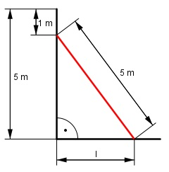

Pythagoras Aufgabe 4 Eine Leiter ist 5 m lang. Sie ist genauso hoch wie die Wand, an der sie steht. Wie weit steht der Fußpunkt der Leiter in m von der Wand entfernt, wenn die Leiter die Wand oben 1 m unter der Oberkante berührt?

52 m2 = l2 + (5 - 1)2 m2 |-(5 – 1)2 m2 l2 = 52 m2 - 42 m2 = 9 m2 |√ l = l = 3 m